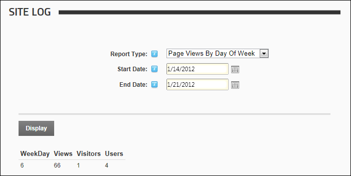

The Page Views By Day Of Week report displays a summary list of the number of visitors and users who viewed the site during the selected day range.
Report Fields:
 The Page Views By Day Of Week Site Log Report